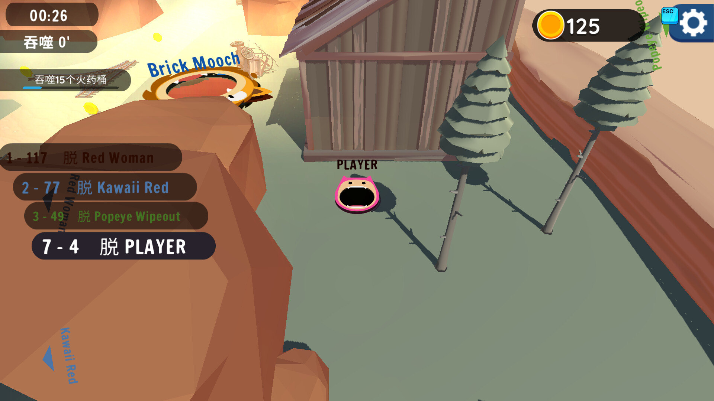
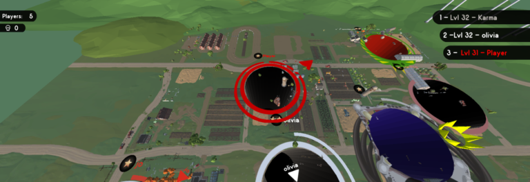
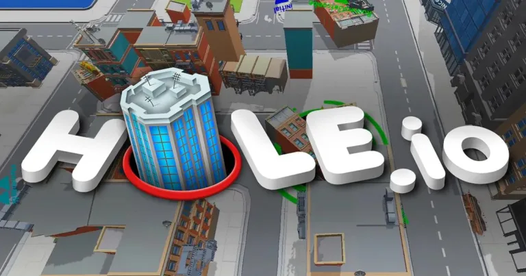

Introduction
BigHole.io is a competitive multiplayer game where you control a growing black hole that devours objects, buildings, and debris across a vibrant city map. Unlike traditional io games, BigHole.io focuses on vertical growth—your hole expands with every object consumed, allowing you to swallow progressively larger items from park benches to entire skyscrapers. The game features real-time multiplayer battles where you compete against other players to become the largest hole on the map. What sets it apart is the satisfying visual feedback of watching your black hole consume entire city blocks combined with strategic decision-making about which objects to target and which routes to take. Fast-paced matches lasting 2-3 minutes make it perfect for quick gaming sessions while still rewarding skilled play with consistent victories.
Getting Started

To begin playing BigHole.io, navigate to the official game page and click the play button to enter a match. The controls are straightforward: move your mouse or drag your finger (on mobile) to direct your black hole across the map. Your hole automatically absorbs any objects smaller than its current diameter. In the early game, focus on consuming small items like trash cans, streetlights, benches, and bushes to grow your size. Watch the progress bar at the top of the screen—it shows your current size ranking against other players. As you grow, you'll unlock the ability to swallow larger objects like cars, buses, and eventually buildings. The key is continuous movement: stopping means losing momentum and giving competitors opportunities to outgrow you. Your first goal should be reaching medium-sized objects within the first 30 seconds to establish a competitive position.
Basic Tips
First, always keep moving—standing still is the fastest way to fall behind as other players absorb objects around you. Second, prioritize vertical growth by targeting the tallest buildings available at your current size; a single skyscraper can add more size than a dozen small items combined. Third, avoid collision with players larger than you, as they can swallow you and end your match instantly. Fourth, learn object values by checking which items increase your size meter most efficiently—fences and bushes are quick wins early on, while lampposts and traffic lights offer better value mid-game. Fifth, use the map edges strategically; objects often cluster near boundaries, giving you safe zones to grow without encountering larger opponents.
Advanced Strategies

First, implement the 'concentric ring' strategy: instead of random movement, follow a systematic pattern spiraling outward from your starting position, ensuring you don't miss consumable objects in any area. Second, master environmental manipulation by positioning yourself near destroyable buildings when larger players chase you—ramming into the structure causes it to collapse, potentially creating barriers between you and your pursuer. Third, develop size thresholds for different map zones; knowing exactly when you can consume buildings versus cars allows you to plan routes that maximize growth efficiency. Fourth, practice predictive eating—anticipate where objects will be based on map patterns and position yourself to consume multiple items in quick succession, maintaining a growth momentum that frustrates opponents trying to catch up.
Pro Tips

First, exploit camera positioning by keeping your hole slightly off-center in your view, giving you maximum peripheral awareness of approaching threats and food opportunities. Second, maintain 'growth velocity' by never letting more than 2 seconds pass without consuming something—consistent small gains compound faster than sporadic large ones. Third, use destructible environments tactically: position yourself so that when a building collapses, its debris falls into your path rather than away from you. Fourth, study spawn patterns—certain map areas consistently produce high-value objects at match intervals, and securing these hotspots early can create an insurmountable size lead within the first minute.
Conclusion
BigHole.io delivers addictive, fast-paced gameplay that rewards both quick reflexes and strategic planning. With its satisfying growth mechanics and competitive multiplayer action, the game offers endless replayability. Start with the basics, master the advanced strategies, and soon you'll be dominating the leaderboard. Try BigHole.io today at the official URL and experience the thrill of becoming the biggest hole on the map!